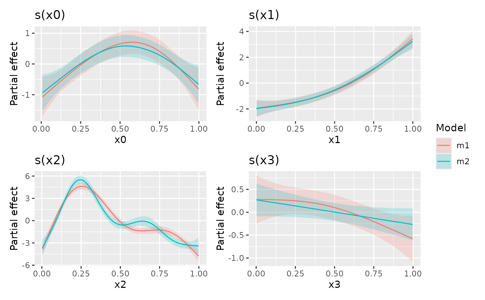

Compare smooths across models
compare_smooths(
model,
...,
smooths = NULL,
n = 100,
data = NULL,
unconditional = FALSE,
overall_uncertainty = TRUE
)| model | Primary model for comparison. |
|---|---|
| ... | Additional models to compare smooths against those of |
| smooths | character; vector of smooths to compare. If not specified comparisons will be performed for smooths common to all models supplied. |
| n | numeric; the number of points over the range of the covariate at which to evaluate the smooth. |
| data | a data frame of covariate values at which to evaluate the smooth. |
| unconditional | logical; should confidence intervals include the
uncertainty due to smoothness selection? If |
| overall_uncertainty | logical; should the uncertainty in the model constant term be included in the standard error of the evaluate values of the smooth? |
op <- options(cli.unicode = FALSE, digits = 5)
load_mgcv()
dat <- data_sim("eg1", seed = 2)
## models to compare smooths across - artificially create differences
m1 <- gam(y ~ s(x0, k = 5) + s(x1, k = 5) + s(x2, k = 5) + s(x3, k = 5),
data = dat, method = "REML")
m2 <- gam(y ~ s(x0, bs = 'ts') + s(x1, bs = 'ts') + s(x2, bs = 'ts') +
s(x3, bs = 'ts'), data = dat, method = "REML")
## build comparisons
comp <- compare_smooths(m1, m2)
comp
#> # A tibble: 8 x 5
#> model smooth type by data
#> <chr> <chr> <chr> <chr> <list>
#> 1 m1 s(x0) TPRS NA <tibble [100 x 3]>
#> 2 m2 s(x0) TPRS (shrink) NA <tibble [100 x 3]>
#> 3 m1 s(x1) TPRS NA <tibble [100 x 3]>
#> 4 m2 s(x1) TPRS (shrink) NA <tibble [100 x 3]>
#> 5 m1 s(x2) TPRS NA <tibble [100 x 3]>
#> 6 m2 s(x2) TPRS (shrink) NA <tibble [100 x 3]>
#> 7 m1 s(x3) TPRS NA <tibble [100 x 3]>
#> 8 m2 s(x3) TPRS (shrink) NA <tibble [100 x 3]>
## notice that the result is a nested tibble
draw(comp)

options(op)